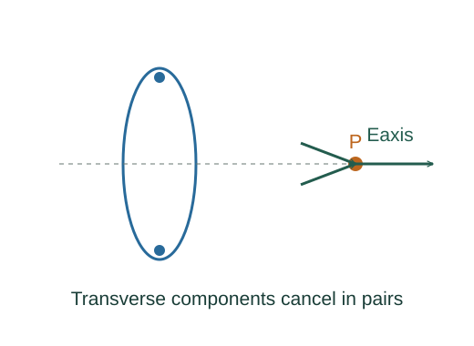

Derive point-charge, dipole and disk fields and potentials
Coulomb force on a test charge is proportional to that test charge. Division by it gives the point-source field; multiplying an external field by a probe charge reverses the definition.
What the symbols mean
ke = 1/(4πε₀); p = qd: dipole moment magnitude; R: disk radius; σ: uniform charge per area.
When this applies
Electrostatic vacuum fields; disk observation at z > 0; dipole approximations require observation distance much greater than separation d.
Developing the argument

Divide source force by test charge
Coulomb force on a test charge is proportional to that test charge. Division by it gives the point-source field; multiplying an external field by a probe charge reverses the definition.
Subtract the two axial dipole fields
At z > d/2, the +q and −q axial fields oppose. Taylor expand the reciprocal squares for z ≫ d and retain the first nonzero term.
Build the disk from rings
A ring of radius r and width dr has charge 2πσr dr. Insert this in the axial ring field and integrate r from zero to R.
Add potentials as scalars
Integrating field gives keq/r per point charge. Sum charges, or integrate dq, without vector projections.
Expand a dipole potential
The distance difference to the two charges is approximately d cos θ at large r. Their reciprocal-distance difference is d cos θ/r².
A worked example
Far from a finite disk its field tends to keQ/z² with Q = πR²σ; near a very large disk it approaches σ/(2ε₀).
Derivation behind this calculation ↗A point to keep straight
A dipole’s net charge vanishes, so its leading far potential and field fall faster than those of a point charge.
Check the assumptions and derivation ↗